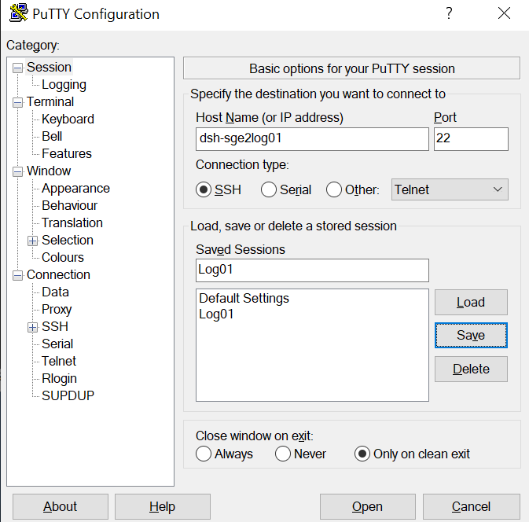
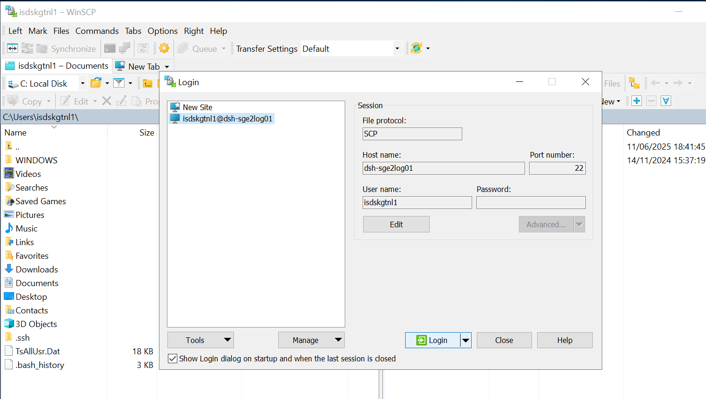
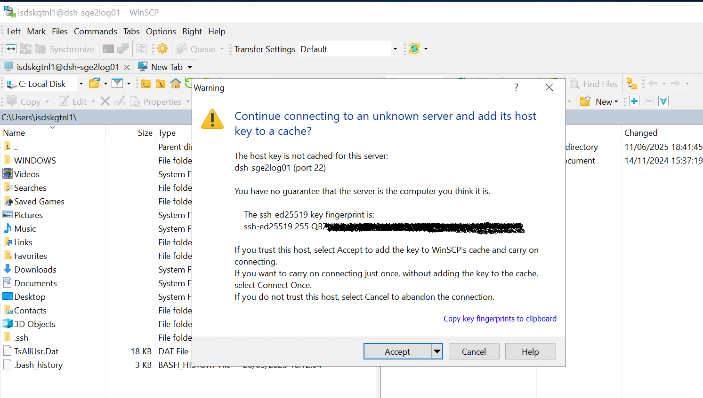
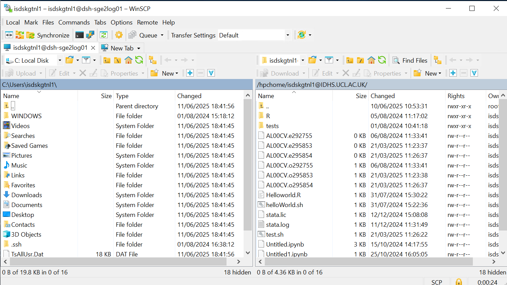
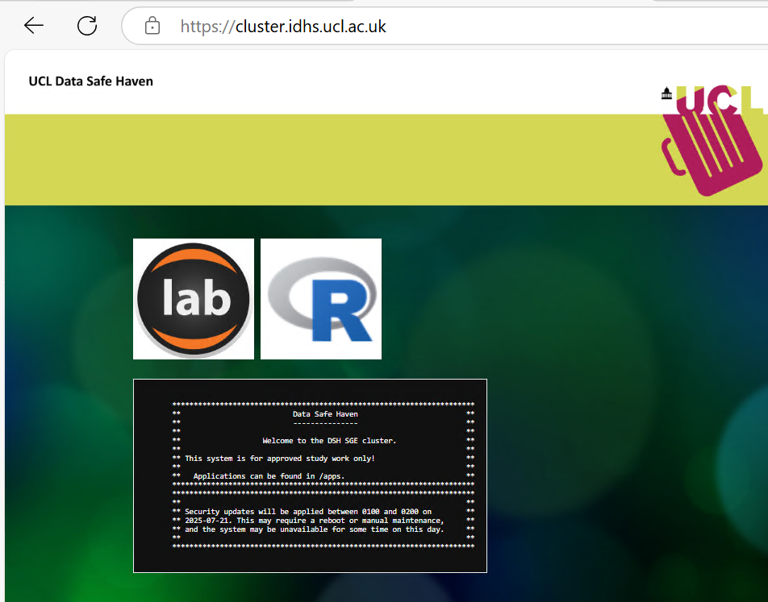

Data Save Haven (DSH) Cluster
DSH is designed for single-node jobs, it is not possible to run multi-node parallel jobs. It is also not connected to internet and it is not connected to the UCL network. You can find extra information about the DSH cluster in the DSH user guide and FAQs, in the Research computing section.
Accounts
DSH accounts can be applied for via the DSH sign up process.
Logging in
You must log in to the cluster from inside DSH Desktop. The connection to the cluster is done by SSH connection. DSH Desktop has PuTTY and Gitbash installed for this purpose.
To connect to the cluster using Gitbash, open a terminal and type the below command to secure shell (ssh) into the machine you wish to access. Replace
ssh <UCL_username>@<DSH_system_name>
Your password will be requested. Enter it and press Enter key
The prompt will not show your password when you are typing it. This is expected and it is for security reasons. Be careful entering your password
The first time you log in to an unknown server you will get a message like this:
The authenticity of host 'IDSH.rc.ucl.ac.uk can't be established.
ECDSA key fingerprint is SHA256:7FTryal3mIhWr9CqM3EPPeXsfezNk8Mm8HPCCAGXiIA.
Are you sure you want to continue connecting (yes/no)?
Typing yes will allow you to continue logging in.
If you have a personal virtual machine in the cluster put the name of your machine in <UCL_username>. Idle ssh sessions will be disconnected after 7 days.
PuTTY is a common SSH client on Windows and is available on DSH Desktop. If you prefer to use it, you will need to create an entry for the host you are connecting to with the settings below. If you want to save your settings, give them an easily-identifiable name in the "Saved Sessions" box and press "Save". Then you can select it and "Load" next time you use PuTTY.

You will then be asked to enter your username and password. Only enter your username, not @
The first time you log in to a new server, you'll get a popup telling you that the server's host key is not cached in the registry - this is normal and is because you have never connected to this server before. If you want to, you can check the host fingerprint against our current key fingerprints.
Login nodes
DSH cluster has two login nodes: dsh-sge2log01 and dsh-sge2log02 and you can connect to either. The login nodes allow you to manage your files, compile code and submit jobs. Very short (< 15 mins) and non-resource-intensive software tests can be run on the login nodes, but anything more should be submitted as a job as login nodes are shared resources. Running memory intensive jobs or jobs with long runtimes on them may negatively impact the performance of the login node for other users. Hence, identified culprit user processes are systematically killed.
Logging in to a specific node
You can access either the dsh-sge2log01 or dsh-sge2log02 login nodes with:
ssh <UCL_username>@dsh-sge2log01
ssh <UCL_username>@dsh-sge2log02
Login problems
If you experience difficulties with your login, please make sure that you are typing your UCL user ID and your password correctly. If you have recently updated your password, it takes some hours to propagate to all UCL systems.
If you still cannot get access but can access DSH desktop, please contact us on rc-support@ucl.ac.uk indicating you are working in the DSH Cluster. If you cannot access anything in DSH, you may need to request a password reset for the DSH service from the Service Desk. Please, contact our support team - Data Safe Haven - General DSH Enquiry
Logging out
You can log out of the systems by typing exit and pressing enter (pressing Ctrl+D also works).
Copying data onto DSH Cluster
If you need to copy data into the cluster, you can only do it if the data is already in the DSH desktop. If the data is outside DSH it must be copied into the DSH desktop thorough the file transfer portal: https://filetransfer.idhs.ucl.ac.uk/webclient/Login.xhtml
If you need to copy data already in the DSH desktop to the cluster you can do it using Secure Copy (SCP) protocol. For this you can use the SCP or rsync commands. If you prefer to use a graphical interface, then you can use WinSCP that are already inside DSH. Filezilla is also installed but as the cluster does not have the SFTP (Secure File Transfer Protocol) installed, it is not possible to use it.
SCP
The following template will copy a data file (preferably a single compressed file) from somewhere on your DSH machine to a specified location on the remote machine inside the DSH cluster (login node, etc) using the SCP command:
scp <local_data_file_path> <UCL_username>@<DSH_system_name>:<remote_path>
If you need to tranfer a folder with several files and directories inside, then use scp with the recursive option:
scp -r <local_data_file_path> <UCL_username>@<DSH_system_name>:<remote_path>
This will do the reverse, copying from the remote DSH machine to your local DSH Desktop. (This is still run from your local machine).
scp <UCL_username>@<DSH_system_name>:<remote_path><remote_data_file> <local_data_file_path>
And this will do recursive copy of files:
scp -r <UCL_username>@<DSH_system_name>:<remote_path><remote_data_file> <local_data_file_path>
rsync
rsync is used to remotely synchronise directories, so can be used to only copy files which have changed. Have a look at man rsync as there are many options.
Transferring data with WinSCP
WinSCP is already installed in DSH Desktop. Once you click on the icon, a Windows GUI will open. The first step to connect is to fill in the connection information requested (File protocol, Server to connect, UCL user name and password) in the main window, as it is shown below:

The file Protocol must be SCP, as the other options are not available for the moment. Then press Login to connect. The first time you connect to a server you will see a message like this:

Press accept. You will see this window:

The left panel usually shows your local computer directories and the right one, the ones in the server you are connected in. To transfer files, just drag the file or directory you want to copy from one panel to the other. It works in both senses, this means you can copy form your local directory in DSH Desktop to the DSH cluster and also from the DSH cluster to DSH Desktop.
Software stack
DSH cluster use software stack based upon RHEL 8.x.
Data storage
Our cluster has a local parallel filesystem consisting of your home where you can write data. Each user has 15B of local storage available (Home directory) and it is not possible to request an increase. This is not a hard quota: once you reach them, you will still be able to write more data but we and encourage you to keep its usage within the limits stablished out of consideration for other cluster users. We are continuously monitoring the proper disk usage. If you need more storage for particular circumstances, please contact us at rc-support@ucl.ac.uk.
Home
Every user has a home directory of 15GB. This is the directory you are in when you first log in, and is located at /hpchome/<UCL_username>@IDHS.UCL.AC.UK (this can be verified with echo $HOME). From another directory, you can jump to your home directory with cd $HOME, or cd ~.
Many programs will save config files to your home directory using filenames beginning with . (e.g., .config, .cache), which causes them to be hidden. You can list all files (including hidden ones) using ls -al.
Tips for use
- Use different directories for different jobs. Do not write everything to the same place.
- Clear up your work directory after your jobs. Keep the files you need, archive or delete the ones you do not.
- Archive and compress directory trees you aren't currently using. (
tarcommand for example). This stores all their contents as one file, and compressing it saves space. - Regularly back-up your important data to somewhere off the cluster.
- If you haven't used particular files for some months and do not expect to in the near future, keep them off-cluster and delete the copies on the cluster.
- If you are no longer using the cluster, remove your data to maintain filesystem performance and allow the space to be used by current active users.
- Before you leave UCL, please consider what should happen to your data, and take steps to put it in a Research Data archive and/or ensure that your colleagues are given access to it.
Requesting transfer of your data to another user
If you want to transfer ownership of all your data to another user, with their consent, you can contact us at rc-support@ucl.ac.uk and ask us to do this or open a general request: Data Safe Haven - General DSH Enquiry
If you are a UCL user, please arrange this while you still have access to the institutional credentials associated with the account. Without this, we cannot identify you as the owner of the account. You will need to tell us what data to transfer and the username of the recipient.
Requesting data belonging to a user who has left
If a researcher you were working with has left and has not transferred their data to you before leaving there is a general UCL Data Protection process to gain access to that data.
At UCL Information Security Policy go to Monitoring Forms and take a copy of Form MO2 "Form MO2 - Request for Access to Stored Documents and Email - long-term absence or staff have left". (Note, it is also applicable to students).
Follow the guidance on that page for how to encrypt the form when sending it to them. The form needs to be signed by the head of department/division and the UCL data protection officer (data-protection@ucl.ac.uk).
Make formal request by ticket : Data Safe Haven - General DSH Enquiry
Node types
DSH cluster's is composed by 11 nodes: 2 login nodes, 7 compute nodes and 2 compute nodes with a GPU each one.
| Type | Hostname | Cores per node | RAM per node | Nodes |
|---|---|---|---|---|
| Login | dsh-sge2log0X | 4 | 16GB | 2 |
| Compute | dsh-sge2cpu0X | 16 | 128GB | 7 |
| Compute + GPU | dsh-sge2gpu0X | 16 + 1 A100 GPUs | 128GB | 2 |
You can tell the type of a node by its name: login nodes are dsh-sge2log0X, etc.
Here are the processors each node type has:
- Login nodes : Intel(R) Xeon(R) Gold 6240 CPU @ 2.60GHz
- Compute nodes : Intel(R) Xeon(R) Gold 6240 CPU @ 2.60GHz
- Compute nodes + GPU : Intel(R) Xeon(R) Gold 6342 CPU @ 2.80GHz
Hyperthreading is not available.
(If you ever need to check this, you can include cat /proc/cpuinfo in your jobscript so
you get it in your job's .o file for the exact node your job ran on. You will get an entry
for every core).
GPUs
DSH has two GPU nodes, each equipped with a Nvidia 80G A100 card (Compute Capability 8.0). Compute Capability is how Nvidia categorises its generations of GPU architectures. When code is compiled, it targets one or multiple of these and so it may only be able to run on GPUs of a specific Compute Capability.
If you get an error like this:
CUDA runtime implicit initialization on GPU:0 failed. Status: device kernel image is invalid
then the software you are running does not support the Compute Capability of the GPU you tried to run it on, and you probably need a newer version.
You can include nvidia-smi in your jobscript to get information about the GPU your job ran on.
Job sizes
| Cores | Max wallclock |
|---|---|
| 1 to 16 | 48hrs suggested |
We do not have a wallclock but we strongly suggest our users to keep their jobs within the 48hrs time limit out of consideration for the other users. If you need more time to run your jobscript for particular circumstances, please contact us at rc-support@ucl.ac.uk.
Interactive jobs run with qrsh and have the same maximum wallclock time suggested as other jobs.
Requesting Customer Specialist Servers
If you need a server with particular characteristics to carry on your work, you can request one. Check our page to request a Customer Specialist Server
Creating, submitting and checking jobs
We have pages that will explain you how to create, submit and check the results of your jobscripts. - To learn about the basic SGE commands to run, check, delete and manage your jobscript, please check our running jobs page. - To create a jobscript, please check our job examples page. - To run an interactive job, please cehck our interactive jobs page - To learn about how to check the results after a job has finished, please check our job results page.
Software
The software already available in DSH cluster is summarized in the table below:
| Software | Version |
|---|---|
| Arrow | 13.0 |
| Bolt_llm | 2.3.6 |
| Cellranger | 7.1.0 |
| Conda | 22.9.0 |
| Epigenetic rlibs | 4.4.0 |
| FSL | 6.0.5 |
| GCTA | 1.94 |
| gdal | 3.3.1 |
| gradle | 8.1.1 |
| h3 | 3.7.1 |
| METAL | - |
| plink | 2, 3 |
| Postgres | 12 |
| PRSice_v1.25 | 1.25,2 |
| Python | 3.10.6 |
| R-packages | - |
| R | 4.4.0 |
| stata | 18.5 |
| voicetypeclassifier | - |
Installing your own software
You can install in your home directory software available in Artifactory or packages available in Python, R and Jupyter. Check our documentation related Installing your own software.
Requesting software installs
To request software installs, email us at rc-support@ucl.ac.uk with the software you need and indicating you are working in the DSH Cluster. You can also contact our support team - Data Safe Haven - General DSH Enquiry.
As DSH is a secure environment, all software that is not already available in Artifactory must be evaluated for vulnerabilities with arisk assesment before being installed. This might take some days and in some complex cases, it can extend to weeks. If dangeours vulnerabilities are found, DSH reserves the right to do not install the software requested for security reasons.
JupyterHub and RStudio
DSH cluster provides an interactive way with a graphical interface to use Jupyter Hub and RStudio softwares. To access the service go to the following URL from inside DSH:
https://cluster.idhs.ucl.ac.uk/
There, a menu will be displayed with both options.

For more information related to these services, visit our pages Jupyter Hub and RStudio
Support
Please visit our contact page.
Acknowledging the Use of DSH Systems
To keep running our services, we depend on being able to demonstrate that they are used in published research.
When preparing papers describing work that has used the DSH services, please use the terms below.
"The authors acknowledge the use of the Data Safe Haven (DSH), and associated support services, in the completion of this work."